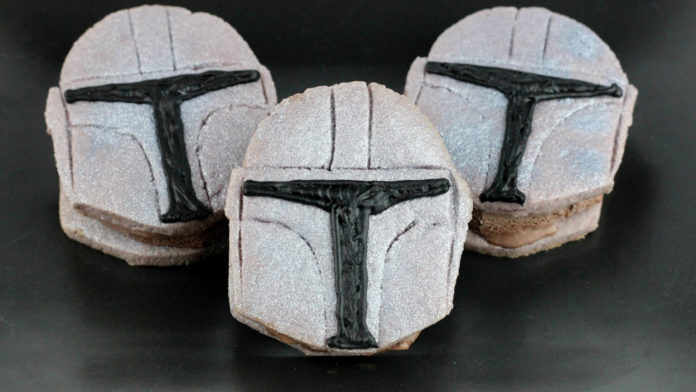

MAKE MANDO ICE CREAM SANDOS FOR THE BEST DESSERT IN THE PARSEC

CELEBRATE THE MANDALORIAN WITH A DESSERT FIT FOR A BOUNTY HUNTER.
The Mandalorian has delivered thrilling and heartfelt stories in the adventures of its mysterious title character and the adorable Child — and now it’s inspiring a delicious dessert. While you take in every detail of the series, you can also get in on the action yourself by making Mando Ice Cream Sandos to enjoy while you watch: two silvery sugar cookies that look just like the Mandalorians’s helmet, with your favorite flavor of ice cream in between. Sounds delicious. Don’t you agree?
You won’t need to invoke the Mandalorian code when you hand these out — there’s more than enough of these tasty treats to go around.
Ingredients
- 1 Mandalorian helmet template
- Edible silver spray
- Black icing
- Ice cream
- 3 cups all-purpose flour
- 1/2 teaspoon baking powder
- Pinch of salt
- 1 cup (2 sticks) unsalted butter, softened
- 1 cup sugar
- 1 egg
- 1 teaspoon vanilla
- Black food gel dye
Steps
- In a medium bowl whisk together the flour, baking powder, and salt. Set aside.
- In the bowl of an electric mixer cream the butter and sugar until combined.
- Add the egg, vanilla, and a small amount of black food gel dye.
- Slowly add in the dry ingredients just until the dough comes together, and turns gray in color.
- Split the dough into two and wrap in plastic wrap. Chill until you are ready to use.
- Preheat the oven to 350 degrees. Prep baking sheets with silpats or parchment paper.
- Roll out the dough to about 1/4 inch thick. Use the template to cut out the shapes. Add helmet details with the back of a knife. Transfer the dough onto the prepped baking sheets.
- Bake for 10 minutes, let cool on a wire rack.
- Once cooled, spray with edible spray. Let set.
- When the spray has set, use a #3 tip and black icing to add the visor detail. Let dry.
- Place a scoop of ice cream onto the flat side of a cookie. Place a second cookie on top to sandwich.
- Serve immediately or freeze for later. (We don’t recommend carbon freezing in this instance.)
Return to Main Page